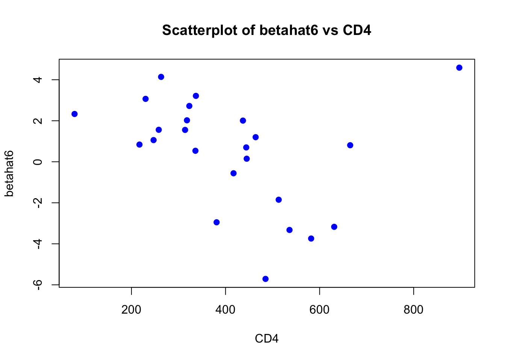

library(DT)
# Load the dataset
data <- read.csv("apoptosis.csv")
# Display only the head in a DT table, body only
datatable(head(data), options = list(dom = 't', ordering = FALSE))Homework 11 - Biostatistics
Dylan Renard
Professor Proschan & Professor Nason
JHU Biostatistics
July 30th, 2025
Assignment for Biostatistics Week 11:
Download and open the “apoptosis” data from the class webpage Answer the following questions referring to this dataset.
This data summarizes an in vitro study of patients with HIV taking IL-7. The main measurement of interest was the percent of cells undergoing apoptosis (cell death), over time. That measurement has been summarized in two ways: betahat6, a measure of the trend of the change over time for each person, and avdiff6, a measure of the average change over time.
- Make a scatterplot of betahat6 against CD4 using plot( )
#Enter code here
# Scatterplot of betahat6 vs CD4
plot(data$CD4, data$betahat6,
xlab = "CD4",
ylab = "betahat6",
main = "Scatterplot of betahat6 vs CD4",
pch = 19, col = "blue")
- Compute the value of the Pearson Correlation Coefficient and test whether this is =0 using cor.test( ). What is your p-value? What can you say?
#Enter code here
# Perform Pearson correlation test
cor_test_result <- cor.test(data$betahat6, data$CD4, method = "pearson")
# Show the full result
cor_test_result
Pearson's product-moment correlation
data: data$betahat6 and data$CD4
t = -1.39, df = 22, p-value = 0.1784
alternative hypothesis: true correlation is not equal to 0
95 percent confidence interval:
-0.6168292 0.1347040
sample estimates:
cor
-0.2841323 The Pearson correlation coefficient was -0.284 with a p-value of 0.178.
Interpretation
Since the p-value is ≥ 0.05, we fail to reject the null hypothesis that the true correlation is 0. This suggests that there is not a statistically significant linear association between betahat6 and CD4 in this sample.
- Now find the Spearman Correlation Coefficient based on the ranks, using the same function but specifying method= “spearman”. What is the value of Spearman’s ρ? What is your p-value? Using this, are these variables significantly correlated?
#Enter code here
spearman_test_result <- cor.test(data$betahat6, data$CD4, method = "spearman")
spearman_test_result
Spearman's rank correlation rho
data: data$betahat6 and data$CD4
S = 3414, p-value = 0.01755
alternative hypothesis: true rho is not equal to 0
sample estimates:
rho
-0.4843478 The Spearman correlation coefficient was -0.484 with a p-value of 0.0175.
Interpretation
Since the p-value is < 0.05, we reject the null hypothesis that the rank-based correlation is 0. This indicates that there is a statistically significant monotonic association between betahat6 and CD4.
Spearman’s correlation is more robust to outliers and non-linear patterns compared to Pearson’s, so this result confirms whether the association holds when considering ranks rather than raw values.
- Use lm( ) to fit a regression line to betahat6 predicted by CD4. Write down the regression equation for this fit line:
#Enter code here
# Fit the model
model <- lm(betahat6 ~ CD4, data = data)
# Display the summary
summary(model)
Call:
lm(formula = betahat6 ~ CD4, data = data)
Residuals:
Min 1Q Median 3Q Max
-5.8498 -1.2111 0.4112 1.5007 6.2326
Coefficients:
Estimate Std. Error t value Pr(>|t|)
(Intercept) 2.234927 1.379663 1.62 0.119
CD4 -0.004323 0.003110 -1.39 0.178
Residual standard error: 2.613 on 22 degrees of freedom
Multiple R-squared: 0.08073, Adjusted R-squared: 0.03895
F-statistic: 1.932 on 1 and 22 DF, p-value: 0.1784The estimated regression coefficients are: - Intercept (α̂) = 2.235 - Slope (β̂) = -0.004
Regression Equation
The fitted regression equation is:
\[ \widehat{\text{betahat6}} = 2.235 + -0.004 \times \text{CD4} \]
- Is the slope of the line significantly different than 0? What is your p-value?
The p-value for the slope is 0.178.
Interpretation
Since the p-value is ≥ 0.05, we fail to reject the null hypothesis that the slope is 0. This means the slope is not different from zero, indicating that CD4 is a non-significant predictor of betahat6.
- Plot the residuals versus fitted values. Describe what you see. Does the line seem to fit well, based on this?
#Enter code here- Find the R2 using the output of the linear regression. If you square root this, what number do you get?
- Notice that there is one large outlier, with the highest CD4 count in the data. Exclude that one value, and recompute:
- The Pearson Correlation coefficient and p-value.
#Enter code here- The Spearman Correlation coefficient and p-value.
#Enter code here- the regression equation and p-value.
#Enter code here- The plot of residuals versus fitted values
#Enter code hereWhich of these changed substantially? Why?
Other Homework: Chapter 17 #1, 3,7, Chapter 18 #4, #9,
17.1 When you are investigating the relationship between two continuous random variables, why is it important to create a scatter plot of the data?
17.3 How does Spearman’s rank correlation differ from the Pearson correlation?
17.7. The data set lowbwt contains information collected for a sample of 100 low birth weight infants born in two teaching hospitals in Boston, Massachusetts [5] (Appendix B, Table B.7). Measurements of systolic blood pressure are saved under the variable name sbp, and values of the Apgar score recorded five minutes after birth-an index of neonatal asphyxia or oxygen deprivation-are saved under the name apgar5. The Apgar score is an ordinal random variable that takes values between 0 and 10.
Estimate the correlation of the random variables systolic blood pressure and five-minute Apgar score for this population of low birth weight infants.
Does Apgar score tend to increase or decrease as systolic blood pressure increases?
Test the null hypothesis H0 : ρ = 0. What do you conclude?
18.4 Why is it dangerous to extrapolate an estimated linear regression line outside the range of the observed data values?
18.9. The data set lowbwt contains information for the sample of 100 low birth weight infants born in Boston, Massachusetts. Measurements of systolic blood pressure are saved under the variable name sbp, and values of gestational age under the name gestage.
Construct a two-way scatter plot of systolic blood pressure versus gestational age. Does the graph suggest anything about the nature of the relationship between these variables?
Using systolic blood pressure as the response and gestational age as the explanatory variable, compute the least-squares regression line. Interpret the estimated slope andy-intercept of the line; what do they mean in words?
At the 0.05 level of significance, test the null hypothesis that the true population slope β is equal to 0. What do you conclude?
What is the estimated mean systolic blood pressure for the population of low birth weight infants whose gestational age is 31 weeks?
Construct a 95% confidence interval for the true mean value of systolic blood pressure when x = 31 weeks.
Suppose that you randomly select a new child from the population of low birth weight infants with gestational age 31 weeks. What is the predicted systolic blood pressure for this child?
Construct a 95% prediction interval for this new value of systolic blood pressure.
Does the least-squares regression model seem to fit the observed data? Comment on the coefficient of determination and a plot of the residuals versus the fitted values of systolic blood pressure.